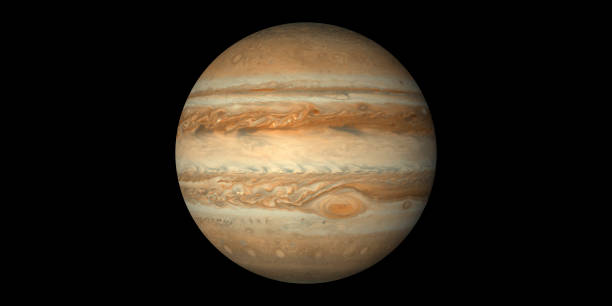

Ejercicio 1. Recrea la siguiente tabla:
| Celda | Celda | Celda | |||||
| Celda | Celda | Celda | |||||
| Celda | Celda | Celda | Celda | Celda | Celda | ||
| Celda | Celda | Celda | Celda | ||||
| Celda | Celda | Celda | Celda | ||||
| Celda | Celda | ||||||
Ejercicio 2. Recrea la siguiente tabla:
| El planeta Júpiter | |||
| Imagen | Datos | Para saber más | |
|  | Distancia desde el sol | 778,5 millones km | link |
| Radio | 69911 km | link | |
| Gravedad | 24,79 m/s² | link | |
| Masa | 1,898 x 10²⁷ | link | |
| Superficie | 61,42 miles de millones de km² | link | |
| Duración del día | 0d 9h 56m | link | |